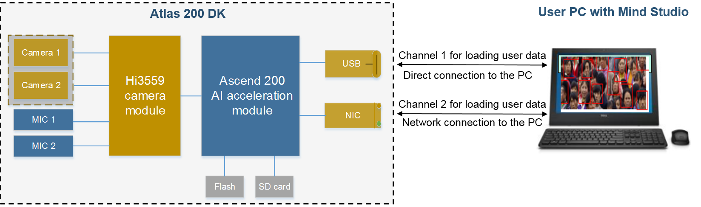

Connecting the Atlas 200 DK to the UI Host
This topic describes how to connect the Atlas 200 DK developer board to the server where Mind Studio is located.
The Atlas 200 DK developer board can be connected to Mind Studio through a USB cable or network cable, as shown in Figure 1.
Figure 1 Connection between the Atlas 200 DK developer board and Mind Studio

Procedure
Connect Mind Studio to the Atlas 200 DK developer board.
There are two connection modes:
In the USB connection scenario, configure the IP address of the server where Mind Studio is located.
Change the IP address of the server to 192.168.1.x （The value ranges of x is 0–1 and 3–255）.
 NOTE:
NOTE:
The default IP address of the Atlas 200 DK developer board is 192.168.1.2. USB 2.0 and USB 3.0 are both supported.When connecting to the Atlas 200 DK developer board over the USB port, you need to configure the static USB IP address. The following describes how to configure the static IP address by using the script or manually:
Configuration by using the script
Download configure_usb_ethernet.sh from https://github.com/Ascend/tools/blob/master/configure_usb_ethernet.sh to any directory on the Ubuntu server where Mind Studio is located, for example, /home/ascend/config_usb_ip/.
NOTE:
If you want to download a single file from GitHub, right-click Raw and choose Save link as from the shortcut menu.
Go to the directory where the script for configuring the USB IP address is located as the root user, for example, /home/ascend/config_usb_ip.
Run the following command to configure the USB IP address:
bash configure_usb_ethernet.sh**-s** ip_address
Use the specified IP address to configure the static IP address of the USB network adapter in the system. If bash configure_usb_ethernet.sh is run, the default IP address 192.168.1.166 is used.
If multiple USB network adapters exist, run the ifconfig command to query the name of the USB network adapter, and then run the following command to configure the IP address of the specified network adapter:
bash configure_usb_ethernet.sh -s usb_nic_name ip_address
usb_nic_name: name of the USB network adapter
ip_address: specified IP address
Example command:
bash configure_usb_ethernet.sh -s enp0s20f0u8 192.168.1.236
After the configuration is complete, run the ifconfig command to check whether the IP address takes effect.
Manual configuration
Log in to the Mind Studio server as the Mind Studio installation user and run the following command to switch to the root user:
su - rootObtain the name of the USB network adapter.
ifconfig -aAdd the static IP address of the USB network adapter to the /etc/network/interfaces file.
Run the following command to open the interfaces file:
vi /etc/network/interfacesConfigure the interfaces file as follows. Assume that the USB network adapter is named enp0s20f0u4 and its static IP address is 192.168.1.134.
auto enp0s20f0u4 iface enp0s20f0u4 inet static address 192.168.1.134 netmask 255.255.255.0Modify the NetworkManager.conf file to prevent the network configuration from being invalid after restart.
Run the following command to open the NetworkManager.conf file:
vi /etc/NetworkManager/NetworkManager.conf
Change managed=false to managed=true in the file.
Enable the static IP address:
enp0s20f0u4ifdown enp0s20f0u4ifup service NetworkManager restart
In the network cable connection scenario, configure the IP address of the server where Mind Studio is located.
Change the IP address of the server to 192.168.0.x （The value ranges of x is 0–1 and 3–255）.
NOTE:
The default IP address of the Atlas 200 DK developer board is 192.168.0.2, with a 24-bit subnet mask.Perform the following steps:
Log in to the Mind Studio server as the Mind Studio installation user and run the following command to switch to the root user:
su - rootAdd the virtual static IP address to the /etc/network/interfaces file.
Run the following command to open the interfaces file:
vi /etc/network/interfacesConfigure the interfaces file. Assume that the network adapter is named eth0:1 and its static IP address is 192.168.0.134.
auto eth0:1 iface eth0:1 inet static address 192.168.0.134 netmask 255.255.255.0Modify the NetworkManager.conf file to prevent the network configuration from being invalid after restart.
Run the following command to open the NetworkManager.conf file:
vi /etc/NetworkManager/NetworkManager.conf
Change managed=false to managed=true in the file.
Restart the network services.
service networking restart service NetworkManager restart
Follow-up Operations
After connecting the Atlas 200 DK developer board to Mind Studio, you can determine whether to restart the Linux server or power off the Atlas 200 DK based on the status of the Atlas 200 DK LED indicators. For details about the status of the LED indicators, see Table 1.
NOTICE:
Restart or power off the server or developer board with caution, especially when the Atlas 200 DK is being upgraded.